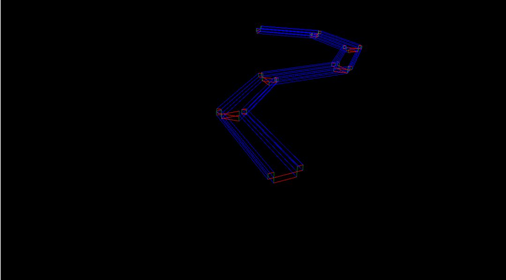
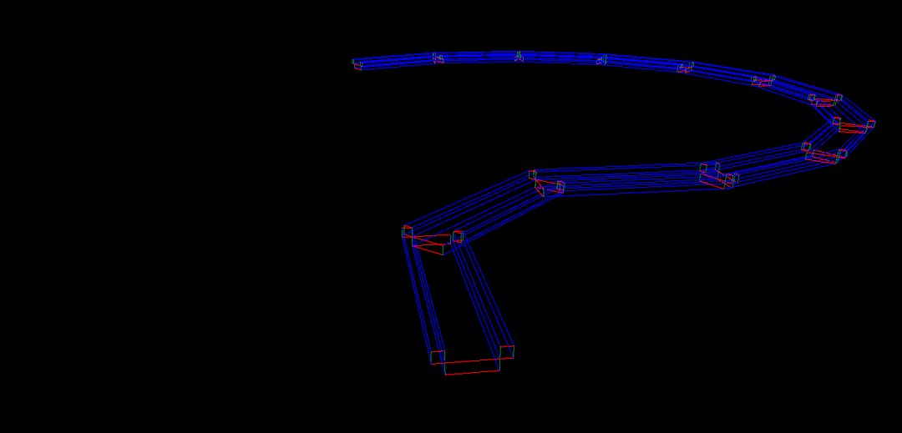

stark7
Hello,
I would like to assemble any road shape from a single section model I made with Blender - could someone please provide some direction on how I could replicate that section over in any curve without getting weird artifacts where the sections join?
A long time ago I wrote an algo to calculate the length of each curb like in the below images based on the radius of curvature of each pair, but that seems a bit overkill and it requires multiple different models to work together - I’m hoping for a simpler solution if it exists. (I also lost that algo and I am not looking forward to recreating it
 )
)
 

 - what i’m gathering is that there’s no built in default component…
- what i’m gathering is that there’s no built in default component…